Es un modelo y una descripción funcional de los requerimientos y las implementaciones de diseño para varias partes de una computadora, con especial interés en la forma en que la unidad central de proceso (CPU) trabaja internamente y accede a las direcciones de memoria.
Estas arquitecturas se desarrollaron en las primeras computadoras electromecánicas y de tubos de vacío. Hay dos arquitecturas distintas relacionadas con el uso y distribución de la memoria: Arquitectura de Jonh Von Neumman y Arquitectura Harvard.
Arquitectura Von Neumann:
la unidad central de proceso (CPU), está conectada a una memoria principal única (casi siempre sólo RAM)
donde se guardan las instrucciones del programa y los datos. A dicha memoria se accede a través de un sistema
interconexión de buses único (control, direcciones y datos).
En un sistema con arquitectura Von Neumann el tamaño de la unidad de datos o instrucciones está fijado por el ancho
del bus que comunica la memoria con la CPU. El tener un único bus hace que el microprocesador sea más lento
en su respuesta, ya que no puede buscar en memoria una nueva instrucción mientras no finalicen las transferencias
de datos de la instrucción anterior.
Componentes principales de Von Neumann: Unidad de Memoria. Unidad de Entrada/Salida. Unidad de Control.
Incluidos CPU. Unidad Aritmética Lógica. Incluida en CPU. Registros de Programas. Incluidos en CPU.
Modelo Von Neumann. Las instrucciones provenientes del sistema de entrada, son almacenados por la
memoria, procesados por la ALU bajo la dirección de la unidad de control. Los resultados obtenidos
son enviados a la unidad de salida. En las computadoras de programa almacenado, el programa puede
manipularse como si se tratara de datos. Este concepto da origen a los compiladores, sistemas operativos
y es la base de la gran versatilidad de las computadoras modernas.
Limitaciones Von Neumann La longitud de las instrucciones por el bus de datos, que hace que el microprocesador tenga
que realizar varios accesos a memoria para buscar instrucciones complejas.
La velocidad de operación a causa del bus único para datos e instrucciones que no deja acceder simultáneamente a unos y
otras, lo cual impide superponer ambos tiempos de accesos.
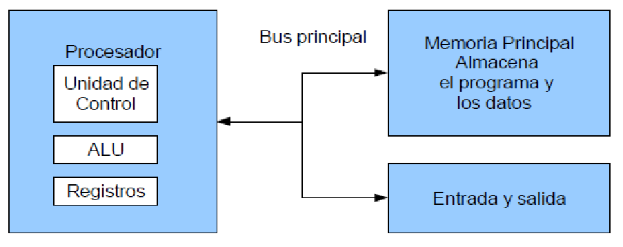
Modelo Von Neumann.
Modelo Harvard:
Esta arquitectura utiliza los Micro controladores, tiene la unidad central de proceso (CPU) conectada a dos memorias (una con las instrucciones y otra con los datos) por medio de dos buses diferentes.
Una de las memorias contiene solamente las instrucciones del programa (Memoria de Programa), y la otra sólo almacena datos (Memoria de Datos). Ambos buses son totalmente independientes lo que permite
que la CPU pueda acceder de forma independiente y simultánea a la memoria de datos y a la de instrucciones. El tamaño de las instrucciones no está relacionado con el de los datos, y por lo tanto puede
ser optimizado para que cualquier instrucción ocupe una sola posición de memoria de programa, logrando así mayor velocidad y menor longitud de programa.
La principal desventaja de esta arquitectura; el bus de datos y direcciones único se convierte en un cuello de botella por el cual debe pasar toda la información que se lee de o se escribe a la memoria,
obligando a que todos los accesos a esta sean secuenciales. Limita el grado de paralelismo (acciones que se pueden realizar al mismo tiempo) y por lo tanto, el desempeño de la computadora.
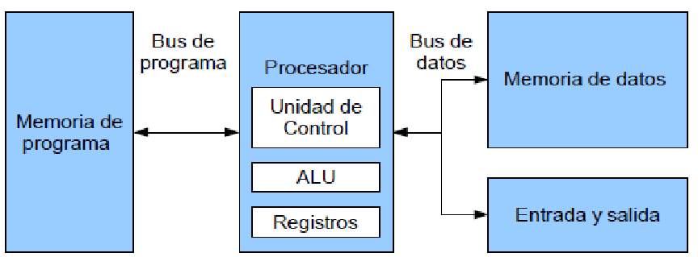
Modelo Harvard.
Es una de las tecnologías utilizadas para realizar la segmentación o paralelismo. Divide el procesador, en etapas, procesa una instrucción diferente en cada una y trabaja con varias a la vez.
Pueden trabajar de forma paralela, en diferentes instrucciones, utilizando una cola de instrucciones para su comunicación, denominado entubamiento.
La dependencia de datos y de control, que tiene como efecto la disminución del rendimiento del pipelining.
La segmentación de cauce (pipelining) es una forma efectiva de organizar el hardware del CPU para realizar más de una operación al mismo tiempo.
Consiste en descomponer el proceso de ejecución de las instrucciones en fases o etapas que permitan una ejecución simultánea.
Explota el paralelismo entre las instrucciones de un flujo secuencial.
La segmentación es una técnica de implementación por la cual se solapa la ejecución de múltiples instrucciones. La técnica de implementación clave utilizada para hacer CPU rápidas. La segmentación es como una línea de ensamblaje: cada etapa de la segmentación completa una parte de la instrucción.
Como en una línea de ensamblaje, la acción a realizar en una instrucción se descompone en partes más pequeñas, cada una de las cuales necesita una fracción del tiempo necesario para completar la instrucción completa.
Cada uno de estos pasos se define como etapa de la segmentación o segmento.
Las etapas están conectadas, cada una a la siguiente, para formar una especie de cauce las instrucciones se entran por un extremo, son procesadas a través de las etapas y salen por el otro.
La productividad de la segmentación está determinada por la frecuencia con que una instrucción salga del cauce.
Como las etapas están conectadas entre sí, todas las etapas deben estar listas para proceder al mismo tiempo. El tiempo requerido para desplazar una instrucción, un paso, a lo largo del cauce es un ciclo máquina.
La duración de un ciclo máquina está determinada por el tiempo que necesita la etapa más lenta (porque todas las etapas progresan a la vez).
Con frecuencia, el ciclo máquina es un ciclo de reloj (a veces dos, o raramente más), aunque el reloj puede tener múltiples fases.
La mejora de velocidad debida a la segmentación es igual al número de etapas.
La mejora de velocidad debida a la segmentación es igual al número de etapas. La segmentación consigue una reducción en el tiempo de ejecución medio por instrucción. Esta reducción se puede obtener decrementando la duración del ciclo de reloj de la máquina segmentada o disminuyendo el número de ciclos de reloj por instrucción, o haciendo ambas cosas.
El mayor impacto está en el número de ciclos de reloj por instrucción, aunque el ciclo de reloj es, con frecuencia, más corto en una máquina segmentada (especialmente en supercomputadores segmentados).
La segmentación es una técnica de implementación, que explota el paralelismo entre las instrucciones de un flujo secuencial. Tiene la ventaja sustancial que, de forma distinta a algunas técnicas de aumento de velocidad, no es visible al programador.
Tipos de cauces:
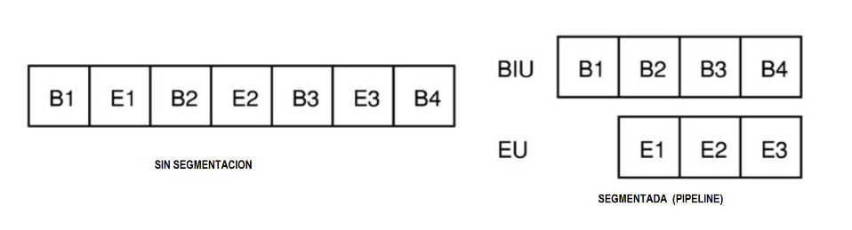
Segmentada
Se denomina multiprocesador a un computador que cuenta con dos o más microprocesadores (CPUs).
La arquitectura NUMA: Donde cada procesador tiene acceso y control exclusivo a una parte de la memoria.
La arquitectura SMP: Donde todos los procesadores comparten toda la memoria.
Para que un multiprocesador opere correctamente necesita un sistema operativo especialmente diseñado para ello.
Los CPU de multiprocesamiento según Flynn se clasifican de la siguiente manera:
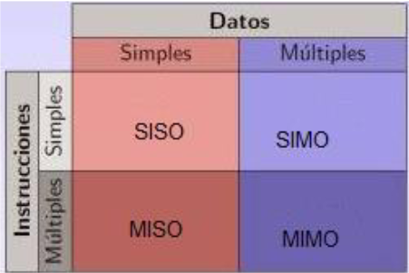
Multiprocesamiento según Flynn
Los procesadores vectoriales, son computadoras pensadas para aplicar un mismo algoritmo numérico a una serie de datos matriciales, en especial en la simulación de sistemas físicos complejos, tales como simuladores de clima, explosiones atómicas, reacciones químicas, etc. Donde los datos son representados como grandes números de datos en forma matricial sobre los que se deben se aplicar el mismo algoritmo numérico.
Los Procesadores Digitales de Señales (DSP), son procesadores especializados en el procesamiento de señales tales como audio, vídeo, radar, sonar, radio, etc. Cuentan con instrucciones tipo vectorial que los hace muy aptos para dicha aplicación.
SMP.
En los sistemas SMP (Simetric Multiprocessing), varios procesadores comparten la misma memoria principal y
periféricos de Entrada /Salida, normalmente conectados por un bus común.
Se conocen como simétricos, ya que ningún procesador toma el papel de maestro y los demás de esclavos, sino que todos
tienen derechos similares en cuanto al acceso a la memoria y periféricos y ambos son administrados por el sistema operativo.
Pueden formarse con varios núcleos en un solo circuito integrado o con varios circuitos integrados en una misma tarjeta madre.
La primera opción ha sido popularizada al hacerse más económicos los procesadores multinúcleo de los principales fabricantes y
con su uso en sistemas de gama media y baja, e inclusive en teléfonos celulares y tabletas.
La segunda opción fue la que se uso en un principio y sigue siendo usada en en estaciones de trabajo y
en servidores de alto rendimiento debido a que incrementa el poder computacional del sistema, pero también
incrementa considerablemente el costo del sistema.
Clusters.
Conjuntos de computadoras independientes conectadas en una red de área local o por un bus de interconexión y que trabajan
cooperativamente. Con un sistema de procesamiento paralelo o distribuido.
Es clave en su funcionamiento contar con un sistema operativo y programas de aplicación capaces de distribuir el trabajo entre las
computadoras de la red.
Se debe tener cuidado al implementar la aplicación, ya que si los datos que hay que pasar de un procesador a otro son demasiados,
el tiempo empleado en pasar información de un nodo a otro puede sobrepasar a la ganancia que se tiene al dividir el trabajo entre
varios procesadores.
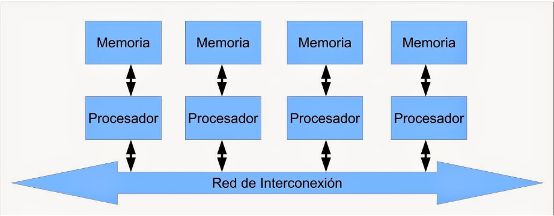
Los programas cada vez más grandes y complejos demandan mayor velocidad en el procesamiento de información,
lo que implica la elección de microprocesadores más rápidos y eficientes.
Para esto la decisión va por dos razones, primero, el juego de instrucciones decide:
El diseño físico del conjunto: Cualquier operación que deba ejecutarse en el microprocesador deberá poder ser descrita en términos de un lenguaje de estas instrucciones.
Componentes Internos.
Cuando hablamos de una computadora nos referimos al conjunto
de componentes internos que se encuentra colocados dentro del gabinete.
Como sabes, los componentes internos son los que componen el hardware de
la computadora.
Los principales componentes internos de la computadora son:
Arquitecturas CISC
En la arquitectura computacional, CISC es un modelo de arquitectura, en donde los microprocesadores
tienen un conjunto instrucciones que caracterizan por ser muy amplio y permitir operaciones complejas
entre operandos, situados en la memoria o en los registros internos.
Este tipo de arquitectura dificulta el paralelismo entre instrucciones, por lo que, en la actualidad,
la mayoría de los sistemas CISC de alto rendimiento implementan un sistema que convierte dichas instrucciones
complejas en varias instrucciones simples del tipo RISC, llamadas generalmente microinstrucciones.
Dato importante: Los CISC pertenecen a la primera corriente de construcción de procesadores, antes del desarrollo
de los RISC. Ademas Para realizar una sola instrucción un chip CISC requiere de cuatro a diez ciclos de reloj.
Arquitectura computacional RISC (Reduced Instruction Set Computer)
Es un tipo de microprocesador con las siguientes características fundamentales:
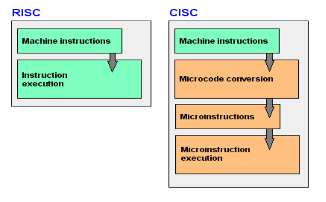
Se la suele llamar coloquialmente como microprocesador o simplemente procesador, y puedes considerarla como el cerebro de cualquier dispositivo. Se encarga de procesar todas las instrucciones del dispositivo, leyendo las órdenes y requisitos del sistema operativo, así como las instrucciones de cada uno de los componentes y las aplicaciones.
CPU es la que se encarga de que todo funcione correctamente, y de interpretar todo lo que quiere hacer el sistema operativo o los componentes, estableciendo las conexiones y realizando todos los cálculos precisos para que funcione. Cuanto más potente sea el procesador, más rápido podrá hacer las operaciones y más rápido funcionará tu dispositivo en general.
Los CPUs modernos pueden clasificarse de acuerdo a varias
características, tales como:
Es un circuito logico digital que realiza operaciones aritmeticas y logicas entres los datos de un circuito: suma resta, division y multiplicacion, asi como establece comparaciones logicas a traves de los condicionales logicos "si", "no", y "o".
Todos los microprocesadores incluyen al menos una ALU, que varia su poder y complejidadsegún su finalidad Además, la ALU cuenta con una serie de registros para almacenar los datos y bits de i nformacion sobre los resultados.
Operaciones a realizar por la ALU:
La ALU deberá contar con un circuito de control que le permita:
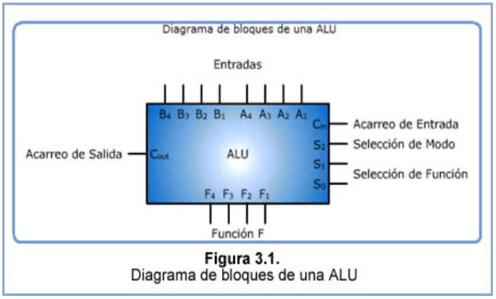
Unidad de Control.
Es la parte “inteligente” del sistema microprocesador, de los CPs. Es el centro lógico de la computadora
ya que los recursos de una computadora son administrados en la unidad de control, es esta unidad la que se
encarga de dirigir el flujo de datos.
Las instrucciones del CPU se encuentran incorporadas en la unidad de control, estas instrucciones o conjunto
de instrucciones enumeran todas las operaciones que un CPU puede realizar. Cada instrucción es expresada en microcódigo.
Antes de que un programa sea ejecutado, cada comando debe desglosarse en instrucciones que correspondan a las que
están en las instrucciones del CPU.
Al momento de ejecutar el programa, el CPU lleva a cabo las instrucciones en orden convirtiéndolas en microcódigo.
Cuando un CPU es desarrollado, el conjunto de instrucciones tiene los mismos comandos que su predecesor, aparte de
incluirle algunos nuevos. Esto permite que el software escrito para un CPU trabaje con computadoras con procesadores
más recientes, esta estrategia es llamada compatibilidad ascendente.
Esta característica permite ahorrar a los consumidores comprar un sistema nuevo cada vez que una parte del
sistema es actualizada. Se le conoce compatibilidad decreciente o inversa, cuando un dispositivo del hardware o
pieza del software puede interactuar con el mismo equipo y software que su predecesor
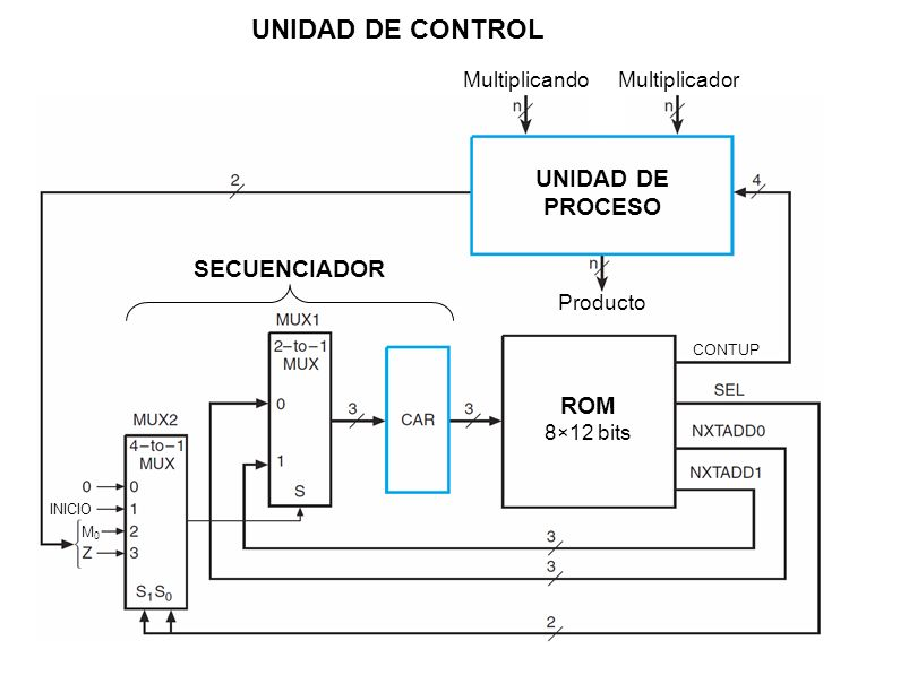
Los registros que encuentran dentro de cada procesador su función principales almacenar los
valores de cada uno de los datos,comandos,instrucciones o estados binarios que son los que ordenan
qué dato debe procesarse, así como la forma en la que se debe realizar.
Un registro no deja de ser una memoria de velocidad alta y con poca capacidad. Cada registro puede
contener una instrucción, una dirección de almacenamiento o cualquier tipo de dato.
Cada procesador tiene varias asignaciones o tareas que debe de realizar para el manejo de la información.
La información es recibida generalmente en código binario, procedente de las aplicaciones para, después,
procesarlos de una forma determinada.
Tipos de registros.
Los registros del procesador se dividen o clasifican atendiendo al propósito que sirven o a las instrucciones que les ordenan.
Un bus se puede definir como una línea de interconexión portadora de información, constituida por
varios hilos conductores (en sentido físico) o varios canales (en sentido de la lógica), por cada
una de las cuales se transporta un bit de información.
Existen dos tipos primordiales de buses (conexiones) para el envío de la información: bus paralelo o serial.
Bus paralelo: Es un bus en el cual los datos son enviados por bytes al mismo tiempo, con la ayuda de varias líneas que tienen
funciones fijas. La cantidad de datos enviada es bastante grande con una frecuencia moderada y es igual al ancho de los datos
por la frecuencia de funcionamiento. En los computadores ha sido usado de manera intensiva, desde el bus del procesador, los
buses de discos duros, tarjetas de expansión y de vídeo hasta las impresoras.
Bus serie: En este los datos son enviados, bit a bit y se reconstruyen por medio de registros o rutinas de software. Está formado
por pocos conductores y su ancho de banda depende de la frecuencia. Es usado desde hace menos de 10 años en buses para discos duros,
tarjetas de expansión y para el bus del procesador.
Buses del procesador.
Bus de Direcciones.
Es unidireccional debido a que la información fluye es una solo sentido, del CPU a
la memoria ó a los elementos de entrada y salida.
El CPU puede colocar niveles lógicos en las n líneas de dirección, con la cual se genera 2n posibles direcciones
diferentes. Cada una de estas direcciones corresponde a una localidad de la memoria ó dispositivo de E/S.
El procesador envía un código de dirección a la memoria o a otro dispositivo externo. El tamaño o anchura
del bus de direcciones está especificado por el número de hilos conductores o pines.
Bus de Datos.
Es bidireccional, pues los datos pueden fluir hacia ó desde el CPU. Las terminales pueden ser entradas ó salidas,
según la operación que se este realizando ( lectura ó escritura ). En todos los casos, las palabras de datos
transmitidas tiene m bits de longitud debido a que el CPU maneja palabras de datos de m bits; del número de bits
del bus de datos, depende la clasificación del procesador.En algunos procesadores, el bus de datos se usa para
transmitir otra información además de los datos.Es compartido en el tiempo ó multiplexado. Transfieren datos o
códigos de instrucción hacia el procesador o se envían hacia el exterior los resultados de las operaciones o cálculos.
Bus de Control.
Señales que se usan para sincronizar las actividades y transacciones con los periféricos del sistema.
Algunas de estas señales, como Lectura o Escritura R / W , son señales que el CPU envía para indicar
que tipo de operación se espera en ese momento.
Tecnología de buses.
El número de líneas que forman los buses (ancho del bus) es fundamental: Si un bus está compuesto por 16 líneas, podrá
enviar 16 bits al mismo tiempo. Los buses conectan toda la circuitería interna. Es decir, los distintos subsistemas del
ordenador intercambian datos gracias a los buses.
Clasificacion de los buses según su criterio fisico:
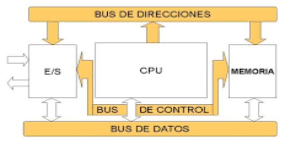
Es un dispositivo que puede mantenerse en por lo menos dos estados estables por un cierto periodo de tiempo.
Cada uno de estos estados estables puede utilizarse para representar un bit. A un dispositivo con la capacidad
de almacenar por lo menos un bit se le conoce como celda básica de memoria.
Un dispositivo de memoria completo se forma con varias celdas básicas y los circuitos asociados para poder
leer y escribir dichas celdas básicas, agrupadas como localidades de memoria que permitan almacenar un grupo de N bits.
La gestión de memoria o administración de memoria es el acto de gestionar la memoria de un dispositivo informático. El proceso de asignación de memoria a los programas que la solicitan. La gestión de la memoria principal de una computadora es una tarea de suma importancia para el funcionamiento de la misma.
La memoria del semiconductor utiliza en su arquitectura circuitos integrados basados en semiconductores para almacenar información. Un chip de memoria de semiconductor puede contener millones de minúsculos transistores o condensadores. Existen memorias de semiconductor de ambos tipos: volátiles y no volátiles. En las computadoras modernas, la memoria principal consiste casi exclusivamente en memoria de semiconductor volátil y dinámica, también conocida como memoria dinámica de acceso aleatorio o más comúnmente RAM (Random Access Memory).
Es la memoria de acceso rápido de una computadora, que guarda temporalmente las últimas informaciones procesadas.
La memoria caché es un búfer especial de memoria que poseen las computadoras, que funciona de manera similar a la
memoria principal, pero es de menor tamaño y de acceso más rápido. Es usada por el procesador para reducir el tiempo
de acceso a datos ubicados en la memoria principal que se utilizan con más frecuencia.
La caché es una memoria que se sitúa entre la unidad central de procesamiento (CPU) y la memoria de
acceso aleatorio (RAM) para acelerar el intercambio de datos. Cuando se accede por primera vez a un dato,
se hace una copia en la caché; los accesos siguientes se realizan a dicha copia, haciendo que sea menor el
tiempo de acceso medio al dato.
Cuando el procesador necesita leer o escribir en una ubicación en memoria principal, primero verifica
si una copia de los datos está en la memoria caché; si es así, el procesador de inmediato lee o escribe
en la memoria caché, que es mucho más rápido que de la lectura o la escritura a la memoria principal.
Memoria caché nivel 1 ( L1).
También llamada memoria interna, se encuentra en el núcleo del procesador.
Es utilizada para almacenar y acceder a datos e instrucciones importantes y de uso frecuente,
agilizando los procesos al ser el nivel que ofrece un tiempo de respuesta menor. Se divide en
dos subniveles: Nivel 1 Data caché: se encarga de almacenar datos usados frecuentemente.
Nivel 1 Instruction caché: se encarga de almacenar instrucciones usadas frecuentemente.
Memoria caché nivel 2 (L2).
Se encarga de almacenar datos de uso frecuente, es mayor que la caché L1, pero a costa de ser más lenta, aun así
es más rápida que la memoria principal (RAM).
Puede ser inclusiva y contener una copia del nivel 1 además de información extra, o exclusiva
y que su contenido sea totalmente diferente de la cache L1, proporcionando así mayor capacidad total.
Memoria caché nivel 3 ( L3)
Es más rápida que la memoria principal (RAM),
pero más lenta que L2, ayuda a que el sistema guarde gran cantidad de información agilizando las tareas del procesador.
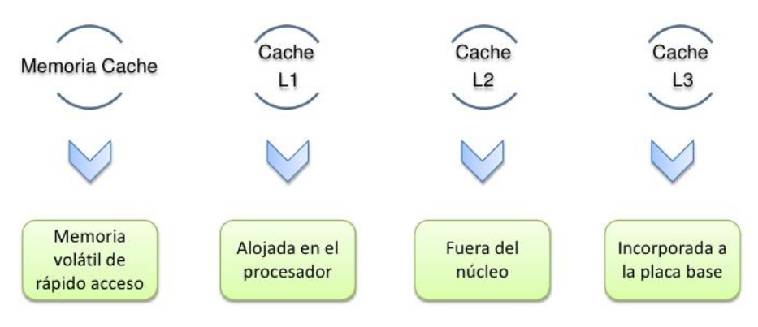
¿Qué es el sistema entrada salida?
Los dispositivos de entrada y salida o unidades de entrada/salida son los equipos físicos conectados a la computadora.
Estos dispositivos permiten comunicar información entre el usuario y la computadora o manejar un soporte de información.
Para poder hacer una operación entre el procesador y un periférico, se necesita conectar estos dispositivos a la computadora y gestionar de manera correcta la transferencia de datos. Esto, se puede realizar mediante los sistemas de módulos de Entrada/Salida. Estos módulos están conectados con el procesador y la memoria principal, cada uno controla uno o más dispositivos externos.
Es un método de transmisión de datos, a través de entrada / salida (E/S), entre una unidad central de procesamiento (CPU) y un dispositivo periférico ,
como un adaptador de red o un dispositivo de almacenamiento Parallel ATA (PATA, anteriormente AT Attachment (ATA)).
Cada transferencia de elementos de datos se inicia mediante una instrucción en el programa, que involucra a la CPU para cada transacción.
Por el contrario, en las operaciones de acceso directo a memoria (DMA), la CPU no participa en la transferencia de datos.
El término puede referirse a E / S mapeadas en memoria (MMIO) o E / S mapeadas en puertos (PMIO). PMIO se refiere a
transferencias que utilizan un espacio de direcciones especial fuera de la memoria normal, al que generalmente se accede
con instrucciones dedicadas, comoEN y FUERAen arquitecturas x86 . MMIO se refiere a transferencias a dispositivos de E/S
que están mapeados en el espacio de direcciones normal disponible para el programa. PMIO fue muy útil para los primeros
microprocesadores con espacios de direcciones pequeños, ya que los dispositivos de E / S no consumían el valioso recurso.
Elimina bucles de sondeo, de forma que entre CPU y unidad de E/S existe una línea de comunicación HARDWARE que provoca
que cuando un periférico precisa de la atención de la CPU la unidad de E/S envía un nivel o flanco de tensión que provoca
una interrupción en la CPU.
¿Qué es E/S dirigida por interrupciones?
Este mecanismo es asistido por el hardware para sincronizar el procesador con los sucesos de E/S (asíncronicos).
Luego de dar servicio a un dispositivo ejecutando su rutina de servicio de interrupción asociada, el procesador
reanuda la actividad previa desde el punto de la interrupción.
El acceso directo a memoria (DMA, del inglés direct memory access) permite a cierto tipo de componentes de una computadora acceder
a la memoria del sistema para leer o escribir independientemente de la unidad central de procesamiento (CPU). Muchos sistemas
hardware utilizan DMA, incluyendo controladores de unidades de disco, tarjetas gráficas y tarjetas de sonido. DMA es una
característica esencial en todos los ordenadores modernos, ya que permite a dispositivos de diferentes velocidades
comunicarse sin someter a la CPU a una carga masiva de interrupciones.
Una transferencia DMA consiste principalmente en copiar un bloque de memoria de un dispositivo a otro. En lugar de que la
CPU inicie la transferencia, la transferencia se lleva a cabo por el controlador DMA. Un ejemplo típico es mover un
bloque de memoria desde una memoria externa a una interna más rápida. Tal operación no ocupa al procesador y, por ende,
éste puede efectuar otras tareas. Las transferencias DMA son esenciales para aumentar el rendimiento de aplicaciones
que requieran muchos recursos.
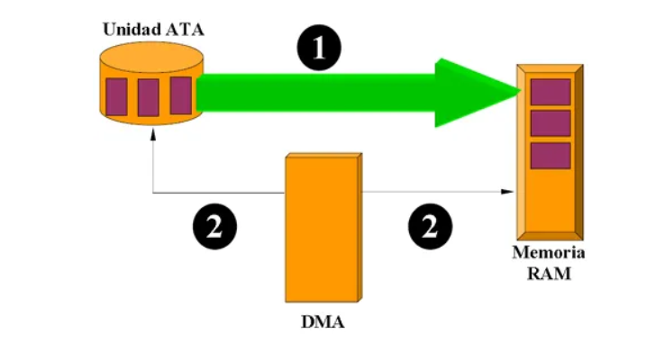
El canal de E/S es una extensión del concepto DMA. Tiene la capacidad de ejecutar instrucciones de E/S utilizando un procesador
de propósito especial en el canal de E/S y un control completo sobre las operaciones de E/S. El procesador no ejecuta las
instrucciones de E/S por sí mismo. El procesador inicia la transferencia de E/S indicando al canal de E/S que ejecute un programa en la memoria.
El programa especifica: dispositivo o dispositivos, área o áreas de memoria, prioridad y acciones de condición de error.
Tipos de canales de E / S:
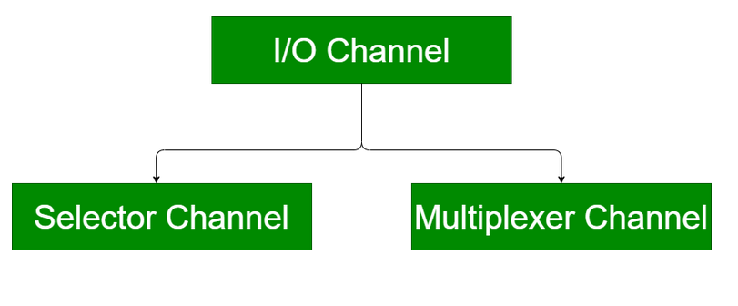
Canal selector:
El canal selector controla varios dispositivos de alta velocidad. Está dedicado a la transferencia de datos con uno de los dispositivos.
En el canal selector, cada dispositivo es manejado por un controlador o módulo de E/S. Controla los controladores de E/S que se
muestran en la figura.
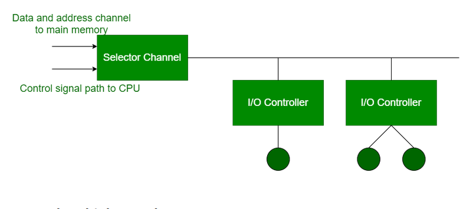
Canal multiplexor:
El canal multiplexor es un controlador DMA que puede manejar varios dispositivos al mismo tiempo. Puede realizar
transferencias en bloque para varios dispositivos a la vez.
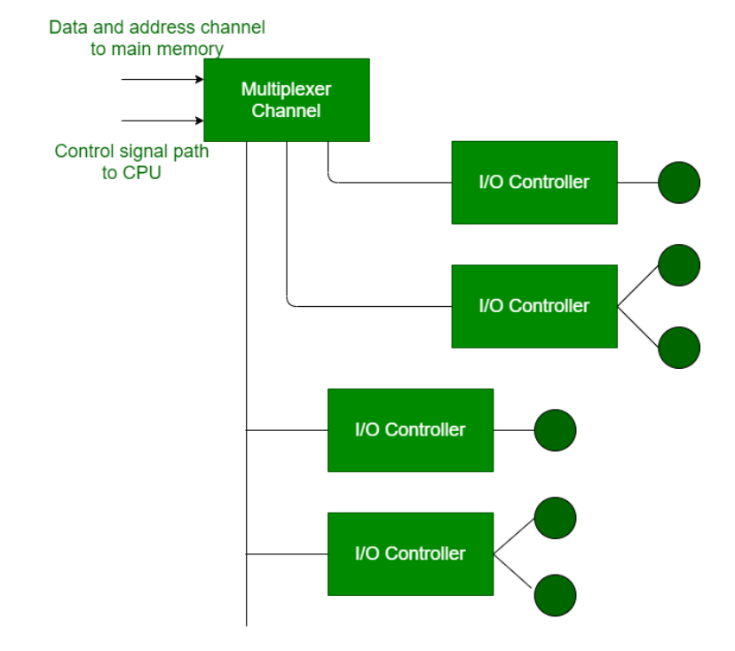
En arquitectura de computadores, el bus es un sistema digital que transfiere datos entre los componentes de una computadora.
Está formado por cables o pistas en un circuito impreso, dispositivos como resistores y condensadores, además de circuitos integrados.
Un bus es una trayectoria por la cual viajan los datos en una computadora para comunicar
los distintos dispositivos entre sí. Los principales buses que se encuentran dentro de una PC son:
los Buses del micro-procesador, los Buses de memoria y los Buses del sistema.
Existen dos tipos de transferencia en los buses:
Un bus es un medio compartido de comunicación constituido por un conjunto de líneas
(conductores) que conecta las diferentes unidades de un computador. La principal función de un
bus será, pues, servir de soporte para la realización de transferencias de información entre dichas
unidades. La unidad que inicia y controla la transferencia se conoce como master del bus para
dicha transferencia, y la unidad sobre la que se realiza la transferencia se conoce como slave. Los
papeles de master y slave son dinámicos, de manera que una misma unidad puede realizar ambas
funciones en transferencias diferentes. Por ejemplo, una unidad de DMA hace de slave en la
inicialización que realiza el master, la CPU, para una operación de E/S. Sin embargo, cuando
comienza la operación, la unidad de DMA juega el papel de master frente a la memoria, que en
esta ocasión hace de slave.
Para garantizar el acceso ordenado al bus, existe un sistema de arbitraje, centralizado o
distribuido, que establece las prioridades cuando dos o más unidades pretenden acceder al mismo
tiempo al bus, es decir, garantiza que en cada momento sólo exista un master.
Para establecer el tiempo de duración de las transferencias y que sea conocido tanto por el
master como por el slave, un bus debe disponer de los medios necesarios para la sincronización
master-slave.
Los computadores modernos tienen por lo menos 4 buses diferentes (bus interno, bus del procesador, bus del caché, bus de memoria, bus local de E/S, bus estándar de E/S). Se les considera una jerarquía, porque cada bus se conecta al nivel superior a él dentro del computador, integrando así todas las partes del computador. Cada uno es generalmente más lento que el que se encuentra sobre él, siendo el bus del procesador el más rápido tratándose de que este es el dispositivo más rápido del computador. Para mejorar el rendimiento del bus, las jerarquías de buses fueron implementadas cada vez más.
Una interrupción (del inglés interrupt request, en español «petición de interrupción») es una señal recibida por el procesador de una computadora, que indica que debe «interrumpir» el curso de ejecución actual y pasar a ejecutar código específico para tratar esta situación. Una interrupción es una suspensión temporal de la ejecución de un proceso, para pasar a ejecutar una subrutina de servicio de interrupción, la cual, por lo general, no forma parte del programa, sino que pertenece al sistema operativo o al BIOS. Una vez finalizada dicha subrutina, se reanuda la ejecución del programa. Las interrupciones son generadas por los dispositivos periféricos habilitando una señal del CPU (llamada IRQ del inglés "interrupt request") para solicitar atención del mismo. Por ejemplo. cuando un disco duro completa una lectura solicita atención al igual que cada vez que se presiona una tecla o se mueve el ratón.